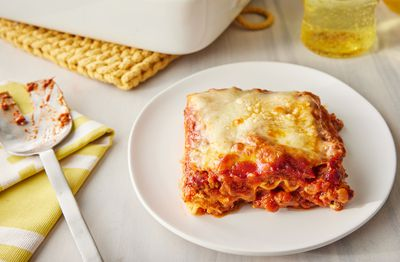

Lasagna

Description
Lasagna is a traditional Italian food
Ingredients
Steps
Put water into flour
Put pasta water on to boil
Brown the ground beef
Cook the bell pepper, onions, and garlic; add back the beef
Make the sauce
Boil and drain the lasagna noodles
Bake